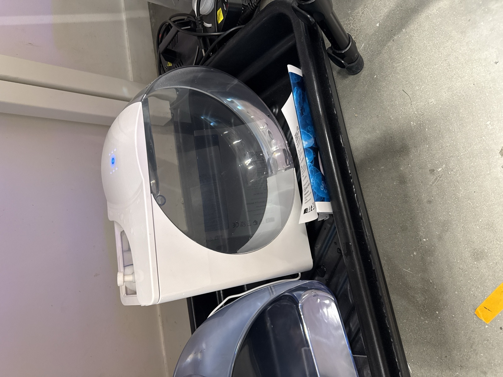
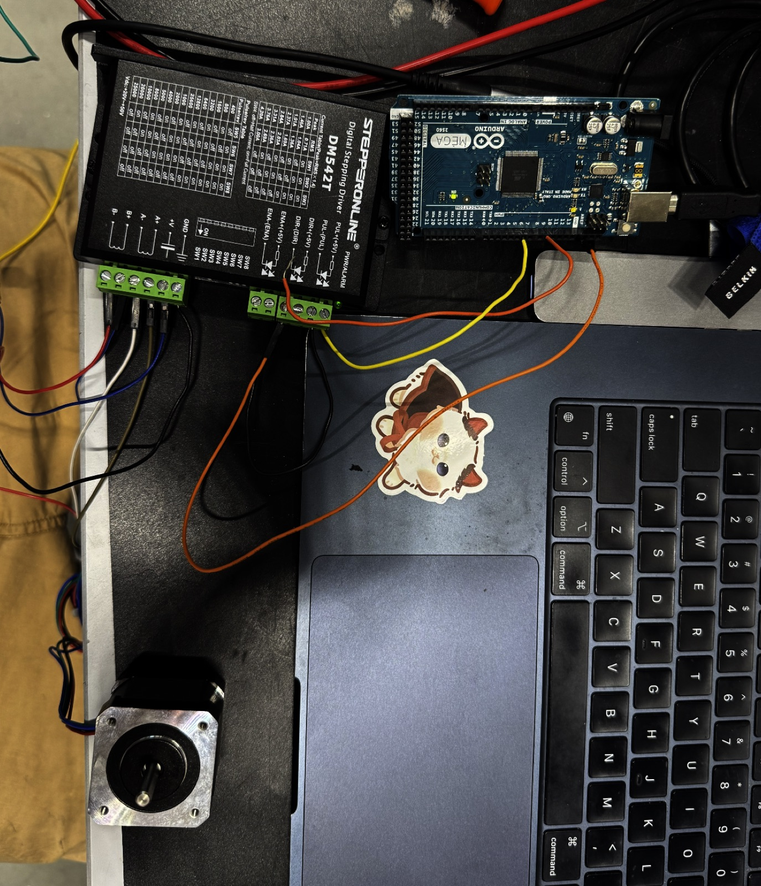

A stepper-motor-driven rig built to observe and record jellyfish movement, part of ongoing research at the Harvard Microrobotics Laboratory into ocean exploration and bio-data recovery tools.


Overview
An Arduino Mega drives a stepper motor through a DM542T digital stepping driver to control the rig, while the jellyfish enclosure allows for controlled observation. This work is ongoing — more detail to follow as the project develops.